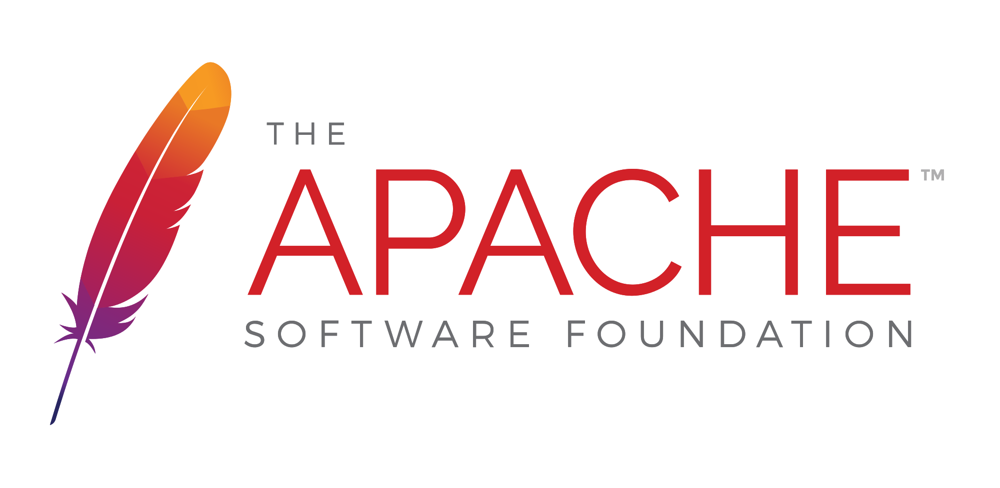

Pandelis Zembashis
🚩 GitHub Campus Expert
🛩 Birmingham, UK
💻 Avid hacker and tinkerer
🔨 FullStack developer
👨🎓 Computer Science Student
What we're going to talk about
- The problem we're trying to solve ✅
- The theory behind how Git works 🔥
- A CLI walkthrough 🔥
- Collaborative website example using GitHub flow ✅
- *Questions tips and tricks 🔥🔨
The problem
👉 Sharing
Sharing Code 💻
Sharing Ideas 💡
Collaborating 👩💻 👨💻
Rejecting what doesn't work ❌
Methods to collaborate
- Google Docs
- Google Drive / DropBox
- USB Drives
- Paper?
- Verbally??
- Serial brain interface???
Not good enough
What is required for effective collaboration
Source of truth
History of changes
Method to accept or reject changes
*Simple
How does Git help us achieve effective (and sane) collaboration
A Git primer
Git is the technology.Git is a free and open source distributed version control system designed to handle everything from small to very large projects with speed and efficiency.
GitHub !== Git (But it's quite close)

GitHub is a web-based hosting service for version control using Git.
It makes Git as easy to use as any website and has many extra features designed to improve how people collaborate.
Git is used allot





Getting into Git
Distributed Workflows

The 3 stages

The lifecycle

The basics
git init - Initialise new git
git clone username@host:/path/to/repository - Clone from server
git add * - add all files that are untracked
git commit -m "Commit message" - commit a staged file
git push origin master - push committed file to remote serverHow we track history (commits)
Each commit is a marker in time with the exact changes (diff) to each file.